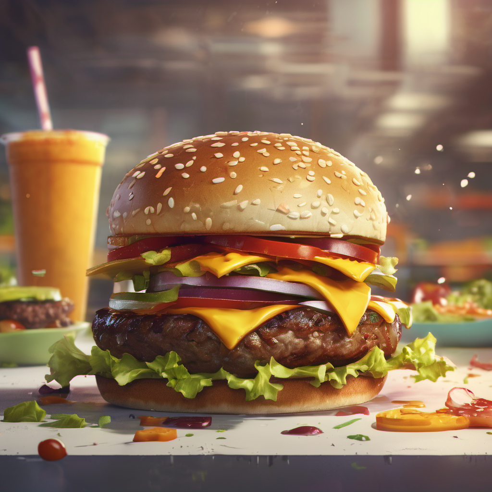

A simple burger

Description
A very simple recipe for a burger that requires about 30 minutes of preparation and 4 minutes of cooking. With the amount of listed ingredients, you can make up to 3 burgers.
Ingredients
- 500 grams of ground beef
- 3 leaves of lettuce
- 3 burger buns
- A Tablespoon of olive oil
- 1 tomato
- Half of red onion
- A tablespoon of sriracha sauce
- A tablespoon of sour cream
- A tablespoob of mayo
- Salt
- 3 american cheese slices
- Kefir
- Half of a cucumber
Steps
-
Make a sauce for your burgers.
- Mix sriracha, sour cream and mayo in a small bowl.
- Add a little bit of kefir; it will help you digest the burgers better.
- Add a little bit of salt, mix again, and taste it. Add more if needed.
-
Prepare your vegetables and burger buns.
- Cut an onion, to make onion rings.
- Slice tomato and cucumber.
- Cut burger buns in half.
- Grab gound beef, and roll 3 meatballs.
- Splash the balls with your hand or by using spatula to make burger patties.
- Add olive oil to your pan, make a cooking pan smoking hot.
- Add your patties into a pan and cooking for 2 mins on each side.
- After 2 minutes, flip your patties and add slices of cheese on top of every patty.
- Combine your cooked patties with other ingredients.
- Bun.
- Sauce.
- Lettuce.
- Patty.
- Onion rings.
- Slice of tomato and slice of cucumber.
- Put sauce on the other half of your bun and cover your burger with it.
- Done :)